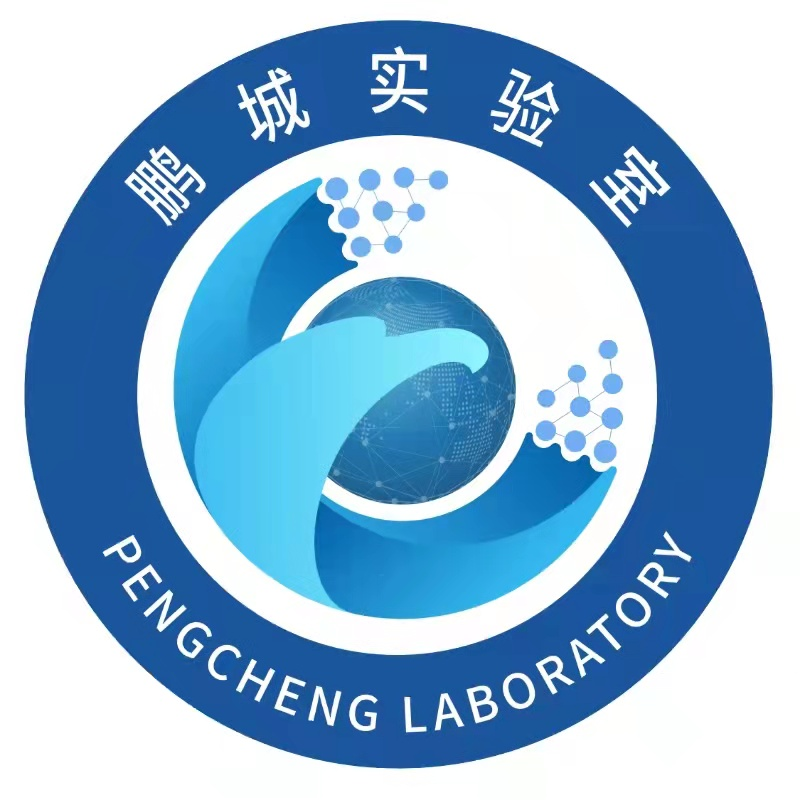

🧑🤝🧑 Authors
⭐ Corresponding Author
- Xiang Xiang
Google Scholar | Homepage | ✉️ xex@hust.edu.cn
Xiang Xiang is currently an associate professor of Intelligence Science and Technology at  Huazhong University of Science and Technology, Wuhan, China, where he founds and directs the HUST AIA Image and Vision Learning Lab (HAIV Lab) since 2021, working on computer vision and open-world learning.
Huazhong University of Science and Technology, Wuhan, China, where he founds and directs the HUST AIA Image and Vision Learning Lab (HAIV Lab) since 2021, working on computer vision and open-world learning.
He is a senior member of China Society of Image and Graphics (CSIG), and also visiting with  Peng Cheng Laborotory, Shenzhen, China.
He has heavily published papers at venues such as CVPR, ICCV, ECCV, ICML, ACM Multimedia, MICCAI , and in journals such as IJCV, TPAMI, TCSVT , and been honorably mentioned twice for the AI 2000 Most Influential Scholar Award in recognition of outstanding and vibrant contributions in the field of multimedia in the past decade.
He has been an applied scientist at AWS AI Labs, Seattle, USA, since 2018, until moving to TuSimple, San Diego, USA, as a senior research scientist in 2020.
Before that, he received the B.S. degree from  Wuhan University, Wuhan, China, in 2009, the M.S. degree from Institute of Computing Technology, Chinese Academy of Sciences, Beijing, China, in 2012, the M.S.E. and Ph.D. degrees from Johns Hopkins University, Baltimore, USA, in 2014 and 2018, respectively, all in computer science.
Wuhan University, Wuhan, China, in 2009, the M.S. degree from Institute of Computing Technology, Chinese Academy of Sciences, Beijing, China, in 2012, the M.S.E. and Ph.D. degrees from Johns Hopkins University, Baltimore, USA, in 2014 and 2018, respectively, all in computer science.
🤗 Other Authors
- Zhou Qinhao
Zhou Qinhao received his B.S. degree from  Northwestern Polytechnical University, Xi'an, China, in 2022, and his M.S. degree from the School of Artificial Intelligence and Automation,
Northwestern Polytechnical University, Xi'an, China, in 2022, and his M.S. degree from the School of Artificial Intelligence and Automation,  Huazhong University of Science and Technology, Wuhan, China, in 2025. He is currently working at
Huazhong University of Science and Technology, Wuhan, China, in 2025. He is currently working at  ByteDance , Beijing, China.
ByteDance , Beijing, China.
- Xu Zhuo
Zhuo Xu has received the B.S. degree from  Huazhong University of Science and Technology, Wuhan, China, in 2023. He is currently pursuing a M.S. degree at the School of Artificial Intelligence and Automation,
Huazhong University of Science and Technology, Wuhan, China, in 2023. He is currently pursuing a M.S. degree at the School of Artificial Intelligence and Automation,  Huazhong University of Science and Technology, Wuhan, China. His research interests include open-set recognition and out-of-distribution detection.
Huazhong University of Science and Technology, Wuhan, China. His research interests include open-set recognition and out-of-distribution detection.
- Ma Jing
Ma Jing received his B.S. degree from  Huazhong University of Science and Technology, Wuhan, China, in 2022, and his M.S. degree from the School of Artificial Intelligence and Automation,
Huazhong University of Science and Technology, Wuhan, China, in 2022, and his M.S. degree from the School of Artificial Intelligence and Automation,  Huazhong University of Science and Technology, Wuhan, China, in 2025. He is currently working at
Huazhong University of Science and Technology, Wuhan, China, in 2025. He is currently working at  iFLYTEK, Hefei, China.
iFLYTEK, Hefei, China.
- Dai Jiaxin
Dai Jiaxin has received the B.S. degree from  Huazhong University of Science and Technology, Wuhan, China, in 2025. He is currently pursuing a M.S. degree at the School of Artificial Intelligence and Automation,
Huazhong University of Science and Technology, Wuhan, China, in 2025. He is currently pursuing a M.S. degree at the School of Artificial Intelligence and Automation,  Huazhong University of Science and Technology, Wuhan, China.
Huazhong University of Science and Technology, Wuhan, China.
- Liang Yifan
Liang Yifan has received the B.S. degree from  Huazhong University of Science and Technology, Wuhan, China, in 2025. He is currently pursuing a M.S. degree at the School of Artificial Intelligence and Automation,
Huazhong University of Science and Technology, Wuhan, China, in 2025. He is currently pursuing a M.S. degree at the School of Artificial Intelligence and Automation,  Huazhong University of Science and Technology, Wuhan, China.
Huazhong University of Science and Technology, Wuhan, China.
- Li Hanlin
Li Hanlin has received the B.S. degree from  Huazhong University of Science and Technology, Wuhan, China, in 2025. He is currently pursuing a M.S. degree at the School of Artificial Intelligence and Automation,
Huazhong University of Science and Technology, Wuhan, China, in 2025. He is currently pursuing a M.S. degree at the School of Artificial Intelligence and Automation,  Huazhong University of Science and Technology, Wuhan, China.
Huazhong University of Science and Technology, Wuhan, China.
🙏 Special Thanks
We would like to express our special gratitude to the following contributors who have graduated but made significant contributions to this project:
- Zhang Zihan
Zhang zihan has received both B.S. and M.S. degrees from the School of Artificial Intelligence and Automation,  Huazhong University of Science and Technology, Wuhan, China. He is currently working at China Mobile Zhejiang Innovation Institute, Hangzhou, China.
Huazhong University of Science and Technology, Wuhan, China. He is currently working at China Mobile Zhejiang Innovation Institute, Hangzhou, China.
- Tan Yuwen
Tan Yuwen has received both B.S. and M.S. degrees from the School of Artificial Intelligence and Automation,  Huazhong University of Science and Technology, Wuhan, China. He is currently pursuing a Ph.D. in Computer Science and Technology at Boston University, Boston, USA, supervised by Prof. Gong Boqi.
Huazhong University of Science and Technology, Wuhan, China. He is currently pursuing a Ph.D. in Computer Science and Technology at Boston University, Boston, USA, supervised by Prof. Gong Boqi.
- Deng Yao
Deng Yao has received the B.S. degree from  Huazhong University of Science and Technology, Wuhan, China, in 2023. He is currently pursuing a M.S. degree at the School of Artificial Intelligence and Automation,
Huazhong University of Science and Technology, Wuhan, China, in 2023. He is currently pursuing a M.S. degree at the School of Artificial Intelligence and Automation,  Huazhong University of Science and Technology, Wuhan, China. His research interests include incremental learning.
Huazhong University of Science and Technology, Wuhan, China. His research interests include incremental learning.
- Chen Zhipeng
Chen Zhipeng received the B.S. degree from  Huazhong University of Science and Technology, Wuhan, China, in 2025. He is currently pursuing a M.S. degree at the School of Artificial Intelligence and Automation,
Huazhong University of Science and Technology, Wuhan, China, in 2025. He is currently pursuing a M.S. degree at the School of Artificial Intelligence and Automation,  Huazhong University of Science and Technology, Wuhan, China.
Huazhong University of Science and Technology, Wuhan, China.